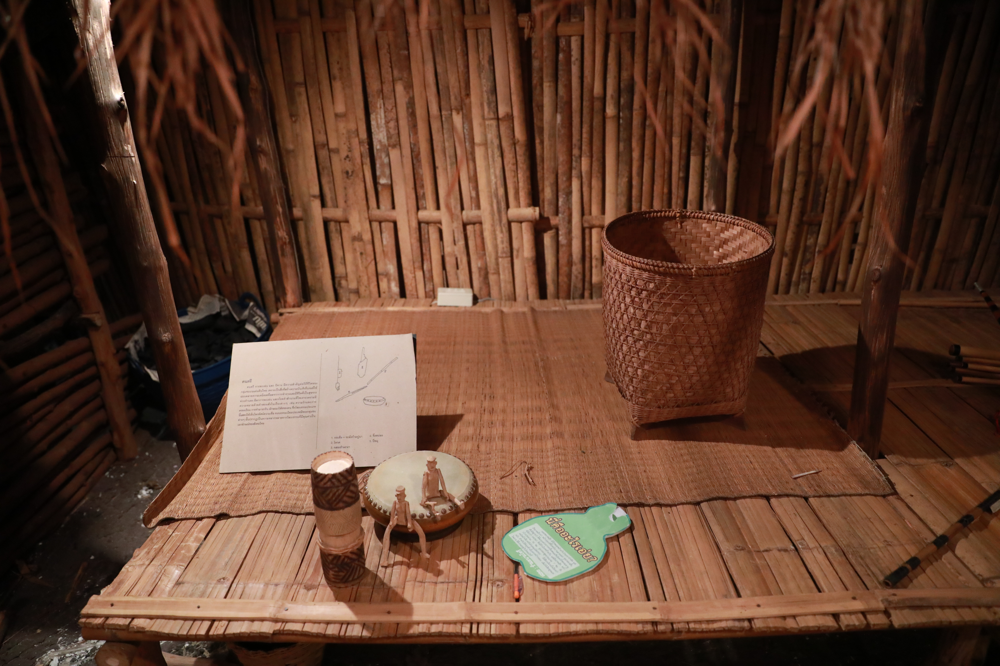

" Know more about The History of The Museum "

RILCA is not only doing a research, but also producing the graduate. RILCA has four languages and cultures postgraduate courses, there are Ph.D. and M.A. in Linguistics, Ph.D. in Multiculture Studies. RILCA also is to maintain the important traditions, it is to arrange many the activities. The Personnel of RILCA have been doing research about the Ethnic continuously for over 30 years and will definitely keep doing this for the benefits of humankind as the slogan "Research and Developmental Institute for Languages, Cultures and Ethnic of Asia"